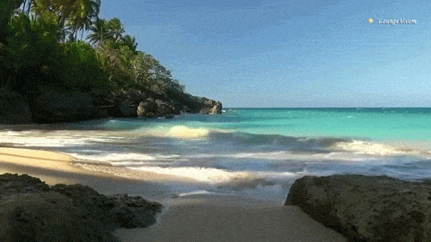
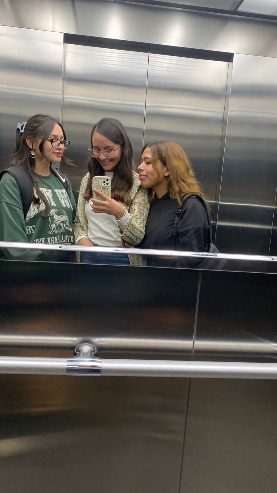
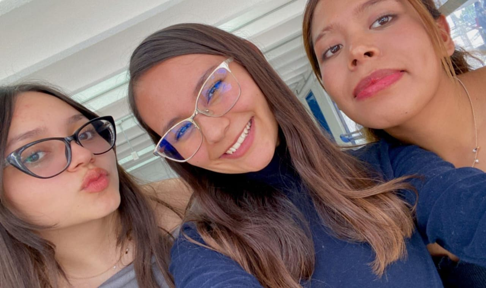
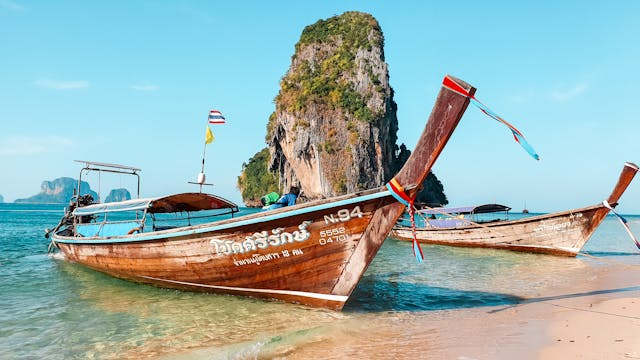

Día mágico con mi hermana
Imagen simple
Mi hermana Daira y yo siempre hemos sido demasiado cercanas, si no fuera por la universidad pasaríamos todo el día juntas. Apesar de convivir tantos días juntas siempre recordaré un día en especifíco en el que lo pasamos de maravilla.
Recuerdo que aquel día fue la primera vez que salimos ella y yo solas a una plaza comercial, estabamos tan emocionadas y contentas que hasta planeamos cada detalle de las cosas que queríamos comprar y tiendas que queríamos visitar. Cuando llegamos a la plaza empezamos a hacer nuestro recorrido por todas las tiendas, nos probamos mucha ropa, comimos delicioso y lo más gracioso de todo fue que no compramos las cosas que queríamos, fue como si se nos hubiera borrado la memoria pero aún así disfrutamos mucha aquel día.
Fin de semana ideal
Imagen como GIF
Mi fin de semana ideal comenzaría un viernes por la tarde. Después de una semana agitada, llegar a un acogedor bungalow frente al mar. El sábado comienza temprano, con el canto de las gaviotas. Despertar con el aroma del café recién hecho y un delicioso desayuno de frutas tropicales y tostadas. Después, dirigirte a la playa con una toalla, protector solar y un buen libro. Pasar horas nadando en aguas cristalinas, jugando en la arena y construyendo castillos. Las risas y los momentos compartidos con amigos o familiares hacen que cada instante sea especial. Iniciar el domingo con una caminata por la orilla, sintiendo la arena entre los dedos. Antes de partir, dar un último chapuzón en el mar y recoger conchas en la orilla, llevándome recuerdos de un fin de semana perfecto.
Fin de semana en familia
Imagen de fondo
Este fin de semana en el campo fue simplemente perfecto. Nos levantamos temprano, con la luz del sol filtrándose entre los árboles, y desde el primer momento supe que iba a ser un día especial. Mi perrita estaba más emocionada que nadie, corriendo por todos lados, explorando cada rincón y moviendo la cola sin parar. Me encanta verla tan feliz en el campo, donde puede correr libre.
Decidimos ir a caminar por un sendero que siempre nos gusta, donde todo es tan tranquilo y solo se escucha el sonido de la naturaleza. Mi perrita iba de un lado a otro, olfateando todo y persiguiendo mariposas, y en los momentos en que volvía corriendo hacia nosotros, no podía evitar.
Hicimos una pausa para el picnic junto a un pequeño arroyo, donde nos sentamos en una manta mientras ella jugaba cerca del agua. Compartimos unos bocadillos y frutas, mientras charlábamos y nos relajábamos bajo el sol. Todo se sintió tan en paz, con las risas de la familia y mi perrita descansando cerca.
Más tarde, cuando el sol comenzó a ponerse, volvimos a la casa. Encendimos una fogata y nos sentamos alrededor mientras el cielo se teñía de naranjas y rosados. Mi perrita, exhausta pero contenta, se acurrucó a nuestro lado, y en ese momento todo parecía perfecto: la naturaleza, la familia, y nuestra compañera de cuatro patas.
Un día normal con mis amigas
Imágenes flotantes
 Amo pasar el rato con mis amigas Mon y Brenda y aquel día fue uno de esos días increíbles en la universidad con mis amigas, lleno de risas desde el primer momento. Llegamos temprano a clase, todas con cara de sueño, pero en cuanto nos vimos, el humor cambió por completo. Mon empezó con uno de sus chistes que, aunque malos, siempre me hacen reír, y Brenda, con su humor seco, agregó sus comentarios sarcásticos que nos hicieron soltar carcajadas en plena clase. Incluso el profesor no pudo evitar sonreír
Después de clase, fuimos por un café al lugar de siempre y nos sentamos un charlar. Nos reímos de todo: de las cosas raras que nos pasan en la universidad, de anécdotas de otros semestres, y de las ocurrencias que surgen cuando estamos juntas. Siempre que estamos las tres, todo se vuelve mucho más divertido. Mon con su energía y Brenda con su humor tan único hacen que cualquier momento sea especial. Yo simplemente disfruto cada segundo, dejándome llevar por la buena vibra.
Decidimos almorzar en el césped, en ese rincón tranquilo que nos encanta, y entre bocados empezamos a hablar de lo que nos gustaría hacer en el futuro. Fue un momento de conexión profunda, donde compartimos nuestros sueños y miedos, pero también nos dimos cuenta de lo mucho que hemos crecido juntas en todo este tiempo. Me encanta cómo podemos pasar de estar riendo a carcajadas a tener conversaciones más serias, y siempre sentirnos apoyados entre nosotras. La tarde la dedicamos a hacer algunas tareas, pero hasta eso fue divertido. Nos motivamos unas a otras, y cada vez que nos distraíamos un poco, terminábamos riendo de algo tonto que una de nosotras decía. Al final del día, ya estábamos planeando nuestra próxima salida. Aquel día fue uno de esos días en los que me siento afortunada de tener a Mon y Brenda en mi vida, donde todo fluyó perfecto y el tiempo se pasó volando.
Lugar que me gusta visitar
Imágenes como vínculo
A mí me encanta ir a la playa, aunque casi nunca voy siempre disfruto pasar el rato en el mar y caminar por la arena. Hay un lugar en especifíco al que me gustó mucho ir, se llama Bahías de Huatulco y se encuentra en el estado de Oaxaca, se extienden a lo largo de 37 kms y se localiza a 227 kms aproximadamente de la capital del estado y a tan solo 1 hra de la CDMX vía aérea.
Aquí te dejo una página por si te interesa visitar este maravilloso lugar.
Vacaciones soñadas
Imágenes con filtro
Aunque nunca he ido a Tailandia, me imagino lo increíble que sería pasear en canoa por esos paisajes exóticos. Me visualizo deslizándome sobre aguas tranquilas, rodeada de altos acantilados de piedra caliza cubiertos de vegetación exuberante. La sensación de paz y asombro debe ser indescriptible, con el suave sonido del remo entrando y saliendo del agua, mientras avanzas por esos canales naturales tan únicos. Imagino el agua cristalina reflejando los rayos del sol que se filtran a través de los árboles, creando un juego de luces sobre la superficie. Sería fascinante entrar en una misteriosa, donde el eco del agua te envuelve y la tranquilidad se siente casi mágica. Aunque aún no he estado allí, sueño con vivir esa experiencia algún día, con la naturaleza tan pura y la serenidad del paisaje.
